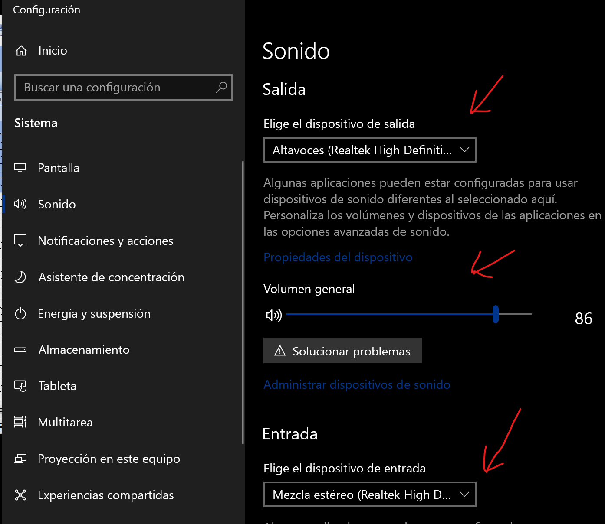
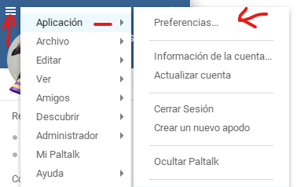
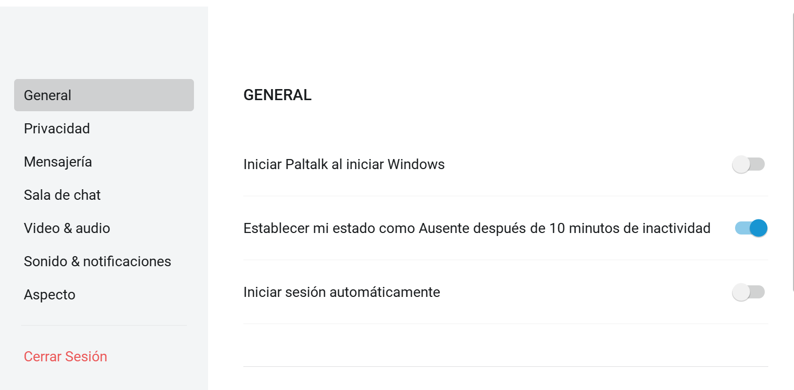
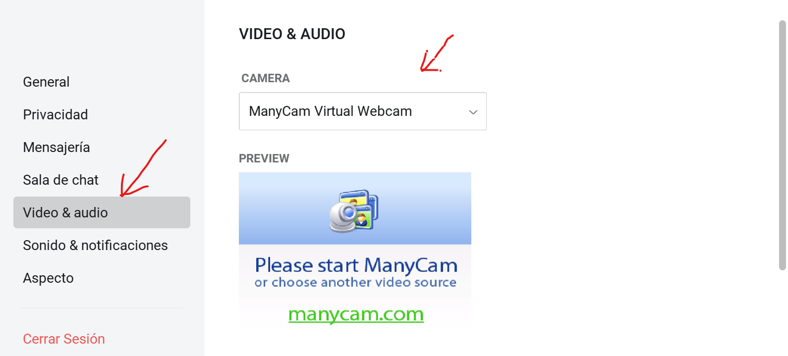
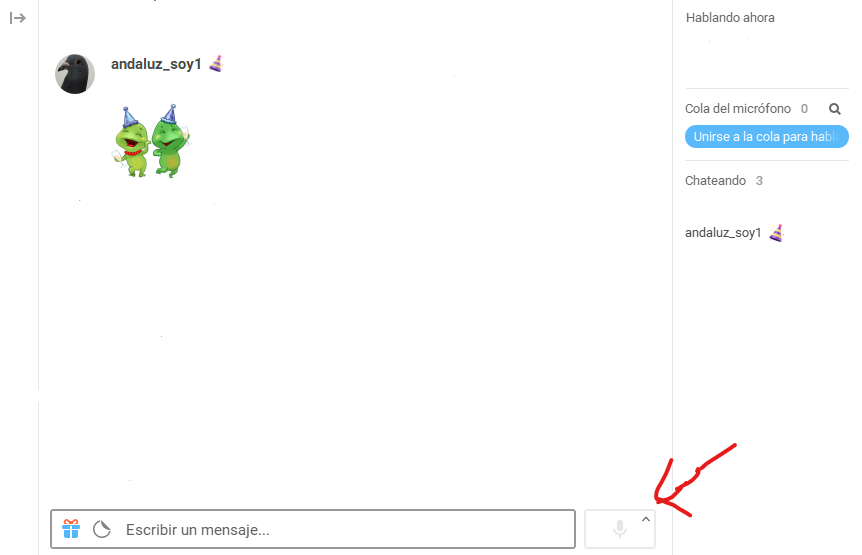
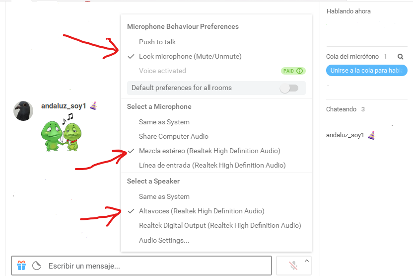
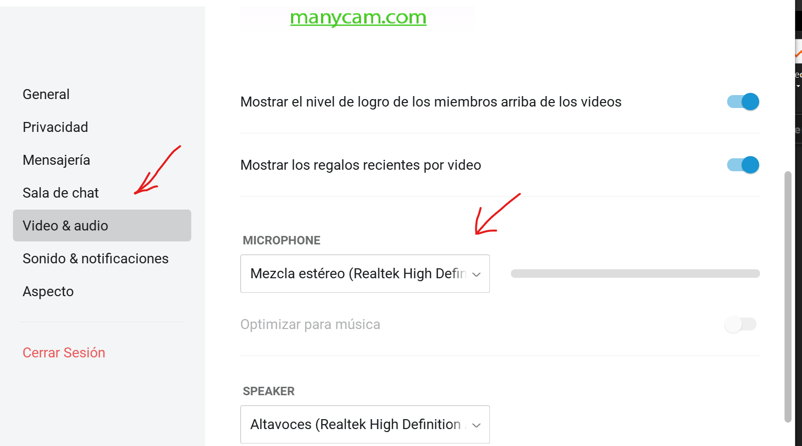

CONFIGURACION DEL ESTEREO MIX EN TU WINDOWS REALIZADO POR MALAJE
1º Vamos a configuracion del sonido del ordenador y activamos lo siguiente:

Cuando ya lo tienes configurado, vas al paltalk para configurarlo.-
1º En la primera pantalla que es la de los contactos, arriba a la izquierda hay tres rayas, pinchas con el raton y te da aplicación, preferencias .....

2º Sale esta ventanita

3º Clip en video & audio y configuras tu camara.-

4º Mas abajo veras Microphone y es ahí a donde configuras el estéreo, en la flechita pequeña te da varias opciones, pero has de tener estereo mix



5º Reinicias tu pc, o pruebas con reiniciar paltalk y ya tiene que sonar bien.